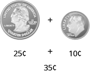
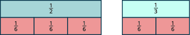
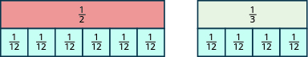
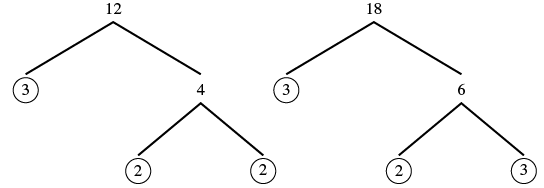
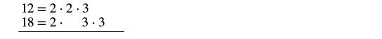
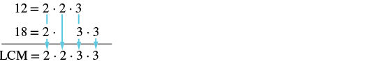
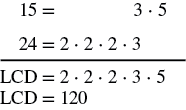

আলাদা হরযুক্ত ভগ্নাংশের যোগ ও বিয়োগ
উৎস-অনুগত সম্পূর্ণ মডিউল · A00 / m81289। সম্পূর্ণ বইয়ের অনুবাদ এখনও চলছে। গণিত, প্রশ্ন, উপস্থিত সমাধান, মূল পরিচয়চিহ্ন ও ছবি সংরক্ষিত। সূত্রের শব্দলেবেল ও ছবি-বিবরণ বাংলায় অনূদিত। যেসব প্রশ্নের উত্তর মূল উৎসে নেই, এখানে সেগুলিতে নতুন উত্তর যোগ করা হয়নি। মূল ছবিতে থাকা ভুল/ইংরেজি লেবেলের ক্ষেত্রে বাংলা বিবরণ ও সম্পাদকীয় সতর্কতা পড়ো। স্বাধীন বাংলা ভাষা/শিক্ষক, শিক্ষার্থী ও সহায়ক-প্রযুক্তি পর্যালোচনা বাকি। বাইরের উৎস-লিঙ্কে ইন্টারনেট প্রয়োজন।
এই পাঠের শেষে তুমি পারবে:
- লঘিষ্ঠ সাধারণ হর নির্ণয় করতে
- লঘিষ্ঠ সাধারণ হরযুক্ত সমতুল ভগ্নাংশে রূপান্তর করতে
- আলাদা হরযুক্ত ভগ্নাংশ যোগ ও বিয়োগ করতে
- ভগ্নাংশের বিভিন্ন গাণিতিক প্রক্রিয়া চিনতে ও প্রয়োগ করতে
- গাণিতিক প্রক্রিয়ার ক্রম মেনে জটিল ভগ্নাংশ সরল করতে
- চলের মান বসিয়ে ভগ্নাংশযুক্ত রাশির মান নির্ণয় করতে
লঘিষ্ঠ সাধারণ হর নির্ণয় করো
আগের পাঠে একই হরের ভগ্নাংশ যোগ ও বিয়োগ করার পদ্ধতি দেখানো হয়েছে। কিন্তু ভগ্নাংশগুলির হর আলাদা হলে কীভাবে যোগ ও বিয়োগ করবে?
আবার মুদ্রার কথা ভাবো। একটি মার্কিন কোয়ার্টার ও একটি ডাইম যোগ করতে পারো কি? মুদ্রা দুটি আছে বলা যায়, কিন্তু তাতে তাদের মোট মূল্য জানা যায় না। মোট মূল্য বার করতে দুটি মুদ্রার মূল্যই একই এককে, অর্থাৎ সেন্টে প্রকাশ করো। একটি কোয়ার্টারের মূল্য সেন্ট এবং একটি ডাইমের মূল্য সেন্ট। তাই মোট মূল্য সেন্ট। দেখো চিত্র [CNX_BMath_Figure_04_05_001]।

একটি মার্কিন কোয়ার্টার ও একটি ডাইম মুদ্রার মধ্যে যোগচিহ্ন। নীচে তাদের মূল্য: ২৫ সেন্ট যোগ ১০ সেন্ট। তার নীচে মোট ৩৫ সেন্ট লেখা আছে।
একইভাবে, ভিন্ন হরের ভগ্নাংশ যোগ করার আগে সেগুলিকে একই হরের সমতুল ভগ্নাংশে রূপান্তর করতে হয়। মুদ্রার মূল্য সেন্টে প্রকাশ করলে এখানে হর হয় এক মার্কিন ডলারে সেন্ট থাকে। তাই সেন্ট হল এক ডলারের অংশ। আবার সেন্টের মূল্য, এক ডলারকে সমগ্র ধরলে, তাই যোগ করি । পাওয়া যায় অর্থাৎ সেন্ট।
একই হরের ভগ্নাংশের যোগ ও বিয়োগ তুমি অনুশীলন করেছ। এবার দেখো, হর আলাদা হলে কী করতে হবে। মনে রেখো, একটি সাধারণ হর পাওয়া মানেই সবচেয়ে ছোটো সাধারণ হর পাওয়া নয়।
প্রথমে ভগ্নাংশের পাত দিয়ে মডেল তৈরি করে একই হর খুঁজব। প্রতিটি চিত্রে একই দৈর্ঘ্যের গোটা পাতকে সমগ্র ধরো; তার সমান ভাগ দিয়ে ভগ্নাংশের পাত তৈরি হয়। ভগ্নাংশ দুটি হল ও
শুরুতে অংশের একটি পাত ও অংশের একটি পাত নাও। একই মাপের ছোটো পাত দিয়ে দুই ক্ষেত্রেই ঠিকমতো মিল চাই: অংশের পাত এবং অংশের পাত ঢাকতে হবে, ছোটো পাত না কেটে এবং ফাঁক বা বাড়তি অংশ না রেখে।
যদি অংশের টুকরো দিয়ে চেষ্টা করি, তবে এমন টি টুকরো মিলে অংশের পাতকে ঠিকমতো ঢাকে। কিন্তু সেগুলি দিয়ে অংশের পাতকে ঠিকমতো ঢাকা যায় না।
বাঁদিকে লব ১, হর ২-এর পাতের নীচে লব ১, হর ৪-এর দুটি পাত; দুটি মিলে উপরের পাতের দৈর্ঘ্য ঠিক মেলে। ডানদিকে লব ১, হর ৩-এর পাতের নীচে লব ১, হর ৪-এর দুটি পাত; দুটি মিলে উপরের পাতের চেয়ে লম্বা। এক চতুর্থাংশের গোটা পাত দিয়ে এক তৃতীয়াংশের দৈর্ঘ্য ঠিক মেলে না।
যদি অংশের টুকরো দিয়ে চেষ্টা করি, তবে সেগুলি দিয়ে অংশের পাত বা অংশের পাত, কোনোটিকেই ঠিকমতো ঢাকা যায় না।
বাঁদিকে লব ১, হর ২-এর পাতের নীচে লব ১, হর ৫-এর তিনটি পাত; তিনটি মিলে উপরের পাতের চেয়ে লম্বা। ডানদিকে লব ১, হর ৩-এর পাতের নীচে লব ১, হর ৫-এর দুটি পাত; সেগুলিও উপরের পাতের চেয়ে লম্বা। এক পঞ্চমাংশের গোটা পাত দিয়ে কোনোটির দৈর্ঘ্যই ঠিক মেলে না।
যদি অংশের টুকরো দিয়ে চেষ্টা করি, তবে ঠিক টি টুকরো দিয়ে অংশের পাত ঢাকা যায়, আর ঠিক টি টুকরো দিয়ে অংশের পাত ঢাকা যায়।

বাঁদিকে লব ১, হর ২-এর পাতের নীচে লব ১, হর ৬-এর তিনটি পাত; তিনটি মিলে উপরের পাতের দৈর্ঘ্য ঠিক মেলে। ডানদিকে লব ১, হর ৩-এর পাতের নীচে লব ১, হর ৬-এর দুটি পাত; দুটি মিলে উপরের পাতের দৈর্ঘ্য ঠিক মেলে।
যদি অংশের টুকরো দিয়ে চেষ্টা করি, সেগুলি দিয়েও পাত দুটিকে ঠিকমতো ঢাকা যাবে।

বাঁদিকে লব ১, হর ২-এর পাতের নীচে লব ১, হর ১২-এর ছয়টি পাত; ছয়টি মিলে উপরের পাতের দৈর্ঘ্য ঠিক মেলে। ডানদিকে লব ১, হর ৩-এর পাতের নীচে লব ১, হর ১২-এর চারটি পাত; চারটি মিলে উপরের পাতের দৈর্ঘ্য ঠিক মেলে।
আরও ছোটো পাত, যেমন ও দিয়েও অংশের পাত এবং অংশের পাত, দুটিকেই ঠিকমতো ঢাকা যাবে।
লব ১ এমন ভগ্নাংশের একই মাপের গোটা টুকরো দিয়ে পাত দুটিকেই ঠিকমতো ঢাকতে চাই। যে মাপগুলি দিয়ে তা করা যায়, তাদের মধ্যে সবচেয়ে বড়ো টুকরোটির হর হল ভগ্নাংশদুটির লঘিষ্ঠ সাধারণ হর। তাই ও ভগ্নাংশদুটির লঘিষ্ঠ সাধারণ হর হল
খেয়াল করো, ও পাতদুটিকে মেলাতে পারে এমন ছোটো পাতগুলির হরে একটি মিল আছে। হরগুলি এবং দুই সংখ্যারই সাধারণ গুণিতক। এই দুই সংখ্যা হল নিম্নলিখিত ভগ্নাংশদুটির হর: ও হরদুটির লঘিষ্ঠ সাধারণ গুণিতক (ল.সা.গু.) হল তাই -ই নিম্নলিখিত ভগ্নাংশদুটির লঘিষ্ঠ সাধারণ হর: ও
দুটি ভগ্নাংশের লঘিষ্ঠ সাধারণ হর নির্ণয় করতে তাদের হরগুলির ল.সা.গু. নির্ণয় করব। আগে দুটি সংখ্যার ল.সা.গু. বার করার যে পদ্ধতি ব্যবহার করেছিলে, এখানেও সেটিই অনুসরণ করো। লঘিষ্ঠ সাধারণ হর বার করতে শুধু ভগ্নাংশগুলির হর ব্যবহার করি, লব নয়।
অনুশীলন · এই প্রশ্নের লিঙ্ক
নিচের ভগ্নাংশদুটির লঘিষ্ঠ সাধারণ হর নির্ণয় করো: ও
সমাধান
| প্রতিটি হরকে মৌলিক গুণনীয়কে বিশ্লেষণ করো। |  দুটি গুণনীয়ক-বৃক্ষ। প্রথমটিতে ১২ ভেঙে ৩ ও ৪, তারপর ৪ ভেঙে ২ ও ২ দেখানো হয়েছে। মৌলিক গুণনীয়ক ৩, ২ ও ২ বৃত্ত দিয়ে ঘেরা। দ্বিতীয়টিতে ১৮ ভেঙে ৩ ও ৬, তারপর ৬ ভেঙে ২ ও ৩ দেখানো হয়েছে। মৌলিক গুণনীয়ক ৩, ২ ও ৩ বৃত্ত দিয়ে ঘেরা। |
| ১২ ও ১৮-এর মৌলিক গুণনীয়কগুলি দুটি সারিতে লেখো। যতটা সম্ভব একই গুণনীয়কের একটি করে জোড়া একই স্তম্ভে রাখো। বারবার আসা গুণনীয়ক বাদ দিও না; জোড়া না পাওয়া গুণনীয়কগুলির জন্য আলাদা স্তম্ভ রাখো। |  দুটি সারিতে লেখা: ১২ সমান ২ গুণ ২ গুণ ৩; ১৮ সমান ২ গুণ ৩ গুণ ৩। দুই সারির একটি করে ২ একই স্তম্ভে, একটি করে ৩ একই স্তম্ভে। বাকি ২ ও ৩ আলাদা স্তম্ভে আছে। এটি দুটি সারির বিন্যাস, ভাগের ভগ্নাংশ নয়। |
| প্রত্যেক স্তম্ভ থেকে একটি করে গুণনীয়ক নীচে নামাও। |  উপরের সারিতে ১২ সমান ২ গুণ ২ গুণ ৩; পরের সারিতে ১৮ সমান ২ গুণ ৩ গুণ ৩। চারটি স্তম্ভের প্রতিটি থেকে একটি করে গুণনীয়ক তিরচিহ্ন দিয়ে নীচে নামানো হয়েছে। নীচে লেখা ল.সা.গু. সমান ২ গুণ ২ গুণ ৩ গুণ ৩। ছবির ইংরেজি এলসিএম সংক্ষিপ্ত রূপটি লঘিষ্ঠ সাধারণ গুণিতক বোঝায়। |
| গুণনীয়কগুলি গুণ করো। গুণফলই ল.সা.গু.। | ল.সা.গু. |
| ১২ ও ১৮-এর ল.সা.গু. হল ৩৬। তাই ও ভগ্নাংশদুটির লঘিষ্ঠ সাধারণ হর হল ৩৬। | নিচের ভগ্নাংশদুটির লঘিষ্ঠ সাধারণ হর ৩৬: ও । |
দুটি ভগ্নাংশের লঘিষ্ঠ সাধারণ হর বার করতে তাদের হরগুলির ল.সা.গু. নির্ণয় করো। লক্ষ করো, নীচের ধাপগুলি ল.সা.গু. নির্ণয়ের ধাপগুলির মতোই।
অনুশীলন · এই প্রশ্নের লিঙ্ক
নিচের ভগ্নাংশদুটির লঘিষ্ঠ সাধারণ হর নির্ণয় করো: ও
সমাধান
লঘিষ্ঠ সাধারণ হর বার করতে হরগুলির ল.সা.গু. নির্ণয় করি।
ল.সা.গু. নির্ণয় করো: ও

প্রথম সারিতে ১৫ সমান ৩ গুণ ৫। পরের সারিতে ২৪ সমান ২ গুণ ২ গুণ ২ গুণ ৩। দুই সারির ৩ একই স্তম্ভে আছে। রেখার নীচে লঘিষ্ঠ সাধারণ হর সমান ২ গুণ ২ গুণ ২ গুণ ৩ গুণ ৫, তারপর লঘিষ্ঠ সাধারণ হর সমান ১২০ লেখা। ছবির ইংরেজি এলসিডি সংক্ষিপ্ত রূপটি লঘিষ্ঠ সাধারণ হর বোঝায়; ১২০ হল হর ১৫ ও ২৪-এর ল.সা.গু.-ও।
ল.সা.গু. নির্ণয় করলে ও -এর জন্য পাওয়া যায় তাই ও ভগ্নাংশদুটির লঘিষ্ঠ সাধারণ হর হল
লঘিষ্ঠ সাধারণ হরযুক্ত সমতুল ভগ্নাংশে রূপান্তর
আগে ভগ্নাংশের মডেলে টুকরো সাজিয়ে দেখেছি, এবং -এর লঘিষ্ঠ সাধারণ হর একই গোটা বস্তুর অংশের তিনটি টুকরো মিলে ঠিক ঢেকে দেয় অংশের টুকরোকে। আবার অংশের দুটি টুকরো দিয়ে ঠিক ঢাকা যায় গোটা বস্তুর এই অংশটিকে: তাই

বাঁ দিকে এক-চতুর্থাংশ লেখা একটি আয়তাকার টুকরো। তার ঠিক নীচে সমান মোট দৈর্ঘ্য জুড়ে তিনটি এক-দ্বাদশাংশের টুকরো। ডান দিকে এক-ষষ্ঠাংশ লেখা একটি টুকরোর নীচে সমান মোট দৈর্ঘ্য জুড়ে দুটি এক-দ্বাদশাংশের টুকরো। তাই এক-চতুর্থাংশের সমান তিন-দ্বাদশাংশ এবং এক-ষষ্ঠাংশের সমান দুই-দ্বাদশাংশ।
আমরা বলি, ও সমতুল ভগ্নাংশ; একইভাবে ও সমতুল ভগ্নাংশ।
সমতুল ভগ্নাংশের ধর্ম ব্যবহার করে আমরা বীজগাণিতিক পদ্ধতিতে একটি ভগ্নাংশকে তার সমতুল ভগ্নাংশে রূপান্তর করতে পারি। মনে রাখো, দুটি ভগ্নাংশের মান একই হলে তারা সমতুল। সুবিধার জন্য সমতুল ভগ্নাংশের ধর্মটি আবার দেওয়া হলো।
ভিন্ন হরযুক্ত ভগ্নাংশ যোগ বা বিয়োগ করতে প্রথমে প্রতিটি ভগ্নাংশকে লঘিষ্ঠ সাধারণ হরযুক্ত একটি সমতুল ভগ্নাংশে রূপান্তর করতে হবে। এবার মডেল ব্যবহার না করে ও ভগ্নাংশ দুটিকে সমতুল ভগ্নাংশে রূপান্তর করি, যাদের হর হবে ।
অনুশীলন · এই প্রশ্নের লিঙ্ক
ও ভগ্নাংশ দুটিকে এমন সমতুল ভগ্নাংশে রূপান্তর করো, যাদের হর হবে অর্থাৎ ভগ্নাংশ দুটির লঘিষ্ঠ সাধারণ হর।
সমাধান
| লঘিষ্ঠ সাধারণ হর নির্ণয় করো। | ও -এর লঘিষ্ঠ সাধারণ হর 12। |
| 4-কে কত দিয়ে গুণ করলে 12 হয়, তা নির্ণয় করো। |  4 গুণ 3 সমান 12। গুণক 3 লাল রঙে দেখানো। |
| 6-কে কত দিয়ে গুণ করলে 12 হয়, তা নির্ণয় করো। |  6 গুণ 2 সমান 12। গুণক 2 লাল রঙে দেখানো। |
| সমতুল ভগ্নাংশের ধর্ম ব্যবহার করে প্রতিটি ভগ্নাংশকে লঘিষ্ঠ সাধারণ হরযুক্ত সমতুল ভগ্নাংশে রূপান্তর করো। প্রত্যেক ভগ্নাংশের লব ও হরকে একই সংখ্যা দিয়ে গুণ করো। |  বাঁ দিকে 1/4-এর নীচে লবে 1 গুণ 3 এবং হরে 4 গুণ 3 লেখা। ডান দিকে 1/6-এর নীচে লবে 1 গুণ 2 এবং হরে 6 গুণ 2 লেখা। একই ভগ্নাংশের লব ও হর একই গুণক দিয়ে গুণ করা হয়েছে; গুণকগুলি লাল রঙে। |
| লব ও হরের গুণগুলি হিসাব করো। |  বাঁ দিকের ভগ্নাংশের লব ৩, হর ১২; ডান দিকের ভগ্নাংশের লব ২, হর ১২। দুটি ভগ্নাংশের হরই ১২। |
পাওয়া ভগ্নাংশগুলিকে আবার লঘিষ্ঠ আকারে নিয়ে যাবে না। তা করলে আমরা মূল ভগ্নাংশগুলিতেই ফিরে যাব, আর একই হর থাকবে না। এখানে লব ও হরের গুণগুলি হিসাব করে লঘিষ্ঠ সাধারণ হরটি বজায় রাখাই উদ্দেশ্য।
অনুশীলন · এই প্রশ্নের লিঙ্ক
ও ভগ্নাংশ দুটিকে এমন সমতুল ভগ্নাংশে রূপান্তর করো, যাদের হর হবে অর্থাৎ ভগ্নাংশ দুটির লঘিষ্ঠ সাধারণ হর।
সমাধান
| লঘিষ্ঠ সাধারণ হর 120 দেওয়া আছে। আমরা দ্বিতীয় ধাপ থেকে শুরু করব। | |
| 15-কে কত দিয়ে গুণ করলে 120 হয়, তা নির্ণয় করো। |  15 গুণ 8 সমান 120। গুণক 8 লাল রঙে দেখানো। |
| 24-কে কত দিয়ে গুণ করলে 120 হয়, তা নির্ণয় করো। |  24 গুণ 5 সমান 120। গুণক 5 লাল রঙে দেখানো। |
| সমতুল ভগ্নাংশের ধর্ম ব্যবহার করো। |  বাঁ দিকে লবে 8 গুণ 8 এবং হরে 15 গুণ 8; ডান দিকে লবে 11 গুণ 5 এবং হরে 24 গুণ 5। প্রথম ভগ্নাংশের একই গুণক 8 এবং দ্বিতীয় ভগ্নাংশের একই গুণক 5 লাল রঙে দেখানো। |
| লব ও হরের গুণগুলি হিসাব করো। |  বাঁ দিকের ভগ্নাংশের লব ৬৪, হর ১২০; ডান দিকের ভগ্নাংশের লব ৫৫, হর ১২০। দুটি ভগ্নাংশের হরই ১২০। |
ভিন্ন হরযুক্ত ভগ্নাংশের যোগ ও বিয়োগ
দুটি ভগ্নাংশকে একই হরযুক্ত সমতুল ভগ্নাংশে রূপান্তর করার পরে, হর একই রেখে লবগুলি যোগ বা বিয়োগ করলেই ভগ্নাংশ দুটির যোগফল বা বিয়োগফল পাওয়া যায়।
অনুশীলন · এই প্রশ্নের লিঙ্ক
যোগ করো:
সমাধান
2 ও 3-এর ল.সা.গু. নির্ণয় করো; সেটিই লঘিষ্ঠ সাধারণ হর। হরগুলির মৌলিক বিশ্লেষণ: 2 সমান 2; 3 সমান 3। লঘিষ্ঠ সাধারণ হর 2 গুণ 3, অর্থাৎ 6। |
|
| লঘিষ্ঠ সাধারণ হর 6 নিয়ে সমতুল ভগ্নাংশে রূপান্তর করো। |  প্রথম ভগ্নাংশের লবে 1 গুণ 3 এবং হরে 2 গুণ 3; এর সঙ্গে যোগ করা হয়েছে দ্বিতীয় ভগ্নাংশ, যার লব 1 গুণ 2 এবং হর 3 গুণ 2। নতুন গুণক 3 ও 2 লাল রঙে। |
| লব ও হরের গুণগুলি হিসাব করো। | |
| যোগ করো। |
মনে রাখো, উত্তরটি আরও সরল করা যায় কি না, তা সব সময় যাচাই করবে। যেহেতু ও -এর 1 ছাড়া আর কোনো সাধারণ গুণনীয়ক নেই, তাই ভগ্নাংশটিকে আর সরল করা যায় না।
অনুশীলন · এই প্রশ্নের লিঙ্ক
বিয়োগ করো:
সমাধান
2 ও 4-এর ল.সা.গু. নির্ণয় করো; সেটিই লঘিষ্ঠ সাধারণ হর। হরগুলির মৌলিক বিশ্লেষণ: 2 সমান 2 এবং 4 সমান 2 গুণ 2। লঘিষ্ঠ সাধারণ হর 2 গুণ 2, অর্থাৎ 4। |
|
| লঘিষ্ঠ সাধারণ হর 4 ব্যবহার করে সমতুল ভগ্নাংশে লেখো। |  লবে 1 গুণ 2 এবং হরে 2 গুণ 2 লেখা ভগ্নাংশ থেকে বন্ধনীর মধ্যে থাকা ঋণাত্মক 1/4 বিয়োগ করা হয়েছে। প্রথম ভগ্নাংশের নতুন গুণক 2 লাল রঙে। |
| প্রথম ভগ্নাংশের লব ও হরের গুণগুলি হিসাব করো। | |
| বিয়োগ করো। | |
| সরল করো। |
একটি ভগ্নাংশের হর আগে থেকেই লঘিষ্ঠ সাধারণ হরের সমান ছিল। তাই কেবল অন্য ভগ্নাংশটিকেই রূপান্তর করতে হয়েছে।
অনুশীলন · এই প্রশ্নের লিঙ্ক
যোগ করো:
সমাধান
12 ও 18-এর ল.সা.গু. নির্ণয় করো; সেটিই লঘিষ্ঠ সাধারণ হর। 12 সমান 2 গুণ 2 গুণ 3 এবং 18 সমান 2 গুণ 3 গুণ 3। লঘিষ্ঠ সাধারণ হরে 2 দুবার এবং 3 দুবার নিয়ে গুণ করা হয়েছে; ফল 36। |
|
| লঘিষ্ঠ সাধারণ হর নিয়ে সমতুল ভগ্নাংশে লেখো। |  প্রথম ভগ্নাংশের লবে 7 গুণ 3 এবং হরে 12 গুণ 3। যোগ করা দ্বিতীয় ভগ্নাংশের লবে 5 গুণ 2 এবং হরে 18 গুণ 2। নতুন গুণক 3 ও 2 লাল রঙে। |
| লব ও হরের গুণগুলি হিসাব করো। | |
| যোগ করো। |
লব মৌলিক সংখ্যা, আর হর হলো হরটি লব দিয়ে নিঃশেষে বিভাজ্য নয়। তাই লব ও হরের 1 ছাড়া আর কোনো সাধারণ গুণনীয়ক নেই। উত্তরটি লঘিষ্ঠ আকারে আছে।
সমতুল ভগ্নাংশের ধর্ম ব্যবহার করার সময়, লঘিষ্ঠ সাধারণ হর পেতে কত দিয়ে গুণ করতে হবে তা দ্রুত নির্ণয় করা যায়। লঘিষ্ঠ সাধারণ হর নির্ণয়ের সময় যেভাবে লিখেছিলে, সেভাবেই হরগুলি ও লঘিষ্ঠ সাধারণ হরের মৌলিক গুণনীয়কগুলি সাজিয়ে লেখো। প্রতিটি হরের বিশ্লেষণে আরও যে গুণনীয়কগুলি দরকার, তাদের গুণফলই হবে ওই হরের জন্য প্রয়োজনীয় গুণক। একই মৌলিক গুণনীয়ক যতবার দরকার, ততবার গুনতে হবে।

12-এর মৌলিক বিশ্লেষণে 2 দুবার ও 3 একবার; শেষের আর একটি 3-এর জায়গা ফাঁকা। 18-এর বিশ্লেষণে 2 একবার ও 3 দুবার; আর একটি 2-এর জায়গা ফাঁকা। লাল রেখা ও ইংরেজি লেখা দিয়ে আরও প্রয়োজনীয় গুণনীয়কগুলির জায়গা চিহ্নিত করা হয়েছে। নীচে লঘিষ্ঠ সাধারণ হর 2 গুণ 2 গুণ 3 গুণ 3, অর্থাৎ 36।
লঘিষ্ঠ সাধারণ হর হলো যার মৌলিক গুণনীয়কে বিশ্লেষণে বার আসে এবং বার আসে
12-এর মৌলিক গুণনীয়কে বিশ্লেষণে দুবার থাকে কিন্তু একবার থাকে । তাই 36-এর বিশ্লেষণের সঙ্গে মেলাতে আরও একবার দরকার সেজন্য -এর লব ও হরকে দিয়ে গুণ করে আমরা এমন সমতুল ভগ্নাংশ পেয়েছি, যার হর
36-এর বিশ্লেষণের সঙ্গে মেলাতে 18-এর বিশ্লেষণে আরও একটি দরকার। তাই -এর লব ও হরকে দিয়ে গুণ করলে পাই সমতুল ভগ্নাংশ, যার হর পরের উদাহরণে ভগ্নাংশ বিয়োগ করার সময় এই পদ্ধতি ব্যবহার করব।
অনুশীলন · এই প্রশ্নের লিঙ্ক
বিয়োগ করো:
সমাধান
লঘিষ্ঠ সাধারণ হর নির্ণয় করো। 15 সমান 3 গুণ 5 এবং 24 সমান 2 গুণ 2 গুণ 2 গুণ 3। লঘিষ্ঠ সাধারণ হর 2 গুণ 2 গুণ 2 গুণ 3 গুণ 5, অর্থাৎ 120। 120-এর মৌলিক বিশ্লেষণের সঙ্গে মেলাতে 15-এর বিশ্লেষণে আরও তিনটি 2 দরকার। 24-এর বিশ্লেষণে আরও একটি 5 দরকার। |
|
| লঘিষ্ঠ সাধারণ হর নিয়ে সমতুল ভগ্নাংশে লেখো। |  লবে 7 গুণ 8 ও হরে 15 গুণ 8 লেখা ভগ্নাংশ থেকে লবে 19 গুণ 5 ও হরে 24 গুণ 5 লেখা ভগ্নাংশ বিয়োগ করা হয়েছে। হর 120 করতে নতুন গুণক 8 ও 5 ব্যবহার করা হয়েছে; সেগুলি লাল রঙে। এখানে ওই গুণকগুলি বাদ দেওয়া হচ্ছে না। |
| প্রতিটি লব ও হরের গুণগুলি হিসাব করো। | |
| বিয়োগ করো। | |
| লব ও হরের সাধারণ গুণনীয়ক 3 আলাদা করে দেখাও। | |
| লব ও হরকে একই সাধারণ গুণনীয়ক দিয়ে ভাগ করে সরল করো। |
অনুশীলন · এই প্রশ্নের লিঙ্ক
যোগ করো:
সমাধান
লঘিষ্ঠ সাধারণ হর নির্ণয় করো। 30 সমান 2 গুণ 3 গুণ 5 এবং 42 সমান 2 গুণ 3 গুণ 7। লঘিষ্ঠ সাধারণ হর 2 গুণ 3 গুণ 5 গুণ 7, অর্থাৎ 210। |
|
| লঘিষ্ঠ সাধারণ হর নিয়ে সমতুল ভগ্নাংশে লেখো। |  প্রথম ভগ্নাংশের লবে 11 গুণ 7 ও হরে 30 গুণ 7; পুরো ভগ্নাংশের আগে ঋণাত্মক চিহ্ন। এর সঙ্গে যোগ করা দ্বিতীয় ভগ্নাংশের লবে 23 গুণ 5 ও হরে 42 গুণ 5। নতুন গুণক 7 ও 5 লাল রঙে। |
| প্রতিটি লব ও হরের গুণগুলি হিসাব করো। | |
| যোগ করো। | |
| লব ও হরের সাধারণ গুণনীয়ক 2 আলাদা করে দেখাও। | |
| লব ও হরকে একই সাধারণ গুণনীয়ক দিয়ে ভাগ করে সরল করো। |
পরের উদাহরণে একটি ভগ্নাংশের লবে চল আছে। দুটি লবেই শুধু সংখ্যা থাকলে যে ধাপগুলি অনুসরণ করি, এখানেও সেই একই ধাপ অনুসরণ করব।
অনুশীলন · এই প্রশ্নের লিঙ্ক
যোগ করো:
সমাধান
ভগ্নাংশ দুটির হর আলাদা।
লঘিষ্ঠ সাধারণ হর নির্ণয় করো। 5 সমান 5 এবং 8 সমান 2 গুণ 2 গুণ 2। লঘিষ্ঠ সাধারণ হর 2 গুণ 2 গুণ 2 গুণ 5, অর্থাৎ 40। |
|
| লঘিষ্ঠ সাধারণ হর নিয়ে সমতুল ভগ্নাংশে লেখো। |  প্রথম ভগ্নাংশের লবে 3 গুণ 8 এবং হরে 5 গুণ 8; এর সঙ্গে যোগ করা দ্বিতীয় ভগ্নাংশের লবে x গুণ 5 এবং হরে 8 গুণ 5। নতুন গুণক 8 ও 5 লাল রঙে। |
| লব ও হরের গুণগুলি হিসাব করো। | |
| যোগ করো। |
লবের পদ ও সদৃশ নয়, তাই যোগ করে একটি পদে লেখা যায় না। এখানে লব ও হরে এমন কোনো সাধারণ গুণনীয়কও নেই যা বাদ দিয়ে আরও সরল করা যায়। তাই রাশিটি এই আকারেই থাকে।
ভগ্নাংশের ক্রিয়া চেনো ও প্রয়োগ করো
এই অধ্যায়ে এতক্ষণ তুমি ভগ্নাংশের গুণ, ভাগ, যোগ ও বিয়োগ অনুশীলন করেছ। নিচে এই চারটি গাণিতিক ক্রিয়ার সারাংশ দেওয়া হল। মনে রেখো, ভগ্নাংশ যোগ বা বিয়োগ করতে হর এক করতে হয়, কিন্তু গুণ বা ভাগ করতে তা লাগে না। প্রতিটি ভগ্নাংশের হর শূন্য নয়; ভাগের ক্ষেত্রে ভাজকও শূন্য হতে পারে না। এখানে লঘিষ্ঠ সাধারণ হর নির্ণয়ের সময় হরগুলিকে ধনাত্মক পূর্ণসংখ্যা ধরা হচ্ছে।
অনুশীলন · এই প্রশ্নের লিঙ্ক
- ⓐ
- ⓑ
সমাধান
প্রথমে নিজেকে জিজ্ঞাসা করো, ‘এখানে কোন ক্রিয়া করতে হবে?’
ⓐ এখানে যোগ করতে হবে।
ভগ্নাংশগুলির হর কি এক? না।
লঘিষ্ঠ সাধারণ হর নির্ণয় করো। প্রথম সারিতে ৪ সমান ২ গুণ ২। দ্বিতীয় সারিতে ৬ সমান ২ গুণ ৩। দুই সারির একটি করে ২ একই স্তম্ভে আছে। রেখার নীচে লঘিষ্ঠ সাধারণ হর সমান ২ গুণ ২ গুণ ৩; পরের সারিতে লঘিষ্ঠ সাধারণ হর সমান ১২। ছবির ইংরেজি এলসিডি সংক্ষিপ্ত রূপটি লঘিষ্ঠ সাধারণ হর বোঝায়। ১২ হল হর ৪ ও ৬-এর লঘিষ্ঠ সাধারণ গুণিতক। |
|
| লঘিষ্ঠ সাধারণ হর নিয়ে প্রতিটি ভগ্নাংশকে সমতুল ভগ্নাংশে লেখো। |  একটি ঋণাত্মক ভগ্নাংশের সঙ্গে একটি ধনাত্মক ভগ্নাংশের যোগ। প্রথম ভগ্নাংশের বাইরে ঋণাত্মক চিহ্ন আছে; তার লব ১ গুণ ৩ এবং হর ৪ গুণ ৩। যোগচিহ্নের পরে দ্বিতীয় ভগ্নাংশের লব ১ গুণ ২ এবং হর ৬ গুণ ২। প্রথমটির লব ও হরে নতুন গুণনীয়ক ৩, আর দ্বিতীয়টির লব ও হরে নতুন গুণনীয়ক ২ লাল রঙে দেখানো। এতে দুই হরই ১২ হয়, ভগ্নাংশের মান অপরিবর্তিত থাকে। |
| লব ও হরের গুণগুলি করো। | |
| চিহ্নসহ লবগুলি যোগ করো। যোগফলকে লবে লেখো, আর একই হর রাখো। | |
| দেখো, উত্তরকে আরও লঘিষ্ঠ আকারে প্রকাশ করা যায় কি না। যায় না; ১ ছাড়া লব ও হরের আর কোনো ধনাত্মক সাধারণ গুণনীয়ক নেই। |
ⓑ এখানে ভাগ করতে হবে। হর এক করার দরকার নেই।
| ভগ্নাংশ ভাগ করতে প্রথম ভগ্নাংশকে দ্বিতীয় ভগ্নাংশের গুণাত্মক বিপরীত দিয়ে গুণ করো। দ্বিতীয় ভগ্নাংশের লব ১ ও হর ৬ বদলে লব ৬ ও হর ১ হয়। | |
| গুণ করো। ঋণাত্মক সংখ্যাকে ধনাত্মক সংখ্যা দিয়ে গুণ করলে গুণফল ঋণাত্মক হয়। | |
| লব ও হরকে ২ দিয়ে ভাগ করে লঘিষ্ঠ আকারে প্রকাশ করো। ঋণাত্মক চিহ্ন বজায় রাখো। |
অনুশীলন · এই প্রশ্নের লিঙ্ক
- ⓐ
- ⓑ
সমাধান
ⓐ এখানে বিয়োগ করতে হবে। ভগ্নাংশগুলির হর এক নয়।
| লঘিষ্ঠ সাধারণ হর ৩০ নিয়ে প্রতিটি ভগ্নাংশকে সমতুল ভগ্নাংশে লেখো। প্রথম ভগ্নাংশের লব ও হরকে ৫ দিয়ে, আর দ্বিতীয়টির লব ও হরকে ৩ দিয়ে গুণ করো। | |
| প্রথম লব থেকে দ্বিতীয় লব বিয়োগ করো। বিয়োগফলকে লবে লেখো, আর একই হর রাখো। ২৫ গুণ এক্স এবং ৯ সদৃশ পদ নয়, তাই লবটি ওই বিয়োগের রাশি হিসেবেই রাখো। |
ⓑ এখানে গুণ করতে হবে। হর এক করার দরকার নেই।
| ভগ্নাংশ গুণ করতে লবগুলিকে গুণ করো এবং হরগুলিকে গুণ করো। | |
| লব ও হরকে গুণনীয়কে ভেঙে সাধারণ গুণনীয়কগুলি দেখাও। একই ৫ ও একই ৩ লব ও হর উভয়ের গুণনীয়ক। | |
| লব ও হর উভয়কে একই সাধারণ গুণনীয়ক ৫ ও ৩ দিয়ে ভাগ করে লঘিষ্ঠ আকারে প্রকাশ করো। কেবল গুণনীয়ক কাটা যায়; যোগ বা বিয়োগের আলাদা পদ এভাবে কাটা যায় না। |
গাণিতিক প্রক্রিয়ার ক্রম মেনে জটিল ভগ্নাংশ সরল করা
মিশ্র ভগ্নাংশ ও জটিল ভগ্নাংশের গুণ ও ভাগ পাঠে আমরা দেখেছি, যে ভগ্নাংশের লব বা হরের মধ্যে ভগ্নাংশ থাকে, তাকে জটিল ভগ্নাংশ বলা হয়। জটিল ভগ্নাংশকে ভাগের আকারে লিখে আমরা সরল করেছি। যেমন,
এবার এমন জটিল ভগ্নাংশ দেখব, যার লব বা হরকে আগে সরল করা যায়। গাণিতিক প্রক্রিয়ার ক্রম মেনে প্রথমে লব ও হর আলাদাভাবে সরল করো। তার পরে লবকে হর দিয়ে ভাগ করো।
অনুশীলন · এই প্রশ্নের লিঙ্ক
সরল করো:
সমাধান
| লব সরল করো। | |
| হরের ঘাতযুক্ত পদটির মান নির্ণয় করো। | |
| হরের পদগুলি যোগ করো। | |
| লবকে হর দিয়ে ভাগ করো। | |
| ভাজকের গুণাত্মক বিপরীত দিয়ে গুণের আকারে লেখো। | |
| গুণ করো। |
অনুশীলন · এই প্রশ্নের লিঙ্ক
সরল করো:
সমাধান
| লবের ভগ্নাংশগুলিকে তাদের লঘিষ্ঠ সাধারণ হর 6 নিয়ে লেখো। হরের ভগ্নাংশগুলিকে তাদের লঘিষ্ঠ সাধারণ হর 12 নিয়ে লেখো। | |
| লবে যোগ করো। হরে বিয়োগ করো। | |
| লবকে হর দিয়ে ভাগ করো। | |
| ভাজকের গুণাত্মক বিপরীত দিয়ে গুণের আকারে লেখো। | |
| সাধারণ গুণনীয়কগুলি দেখিয়ে লেখো। | |
| সরল করো। | 2 |
ভগ্নাংশযুক্ত বীজগাণিতিক রাশির মান নির্ণয়
আগেও আমরা রাশির মান নির্ণয় করেছি। এখন ভগ্নাংশযুক্ত রাশির মানও নির্ণয় করতে পারব। মনে রেখো, কোনো রাশির মান নির্ণয় করতে হলে সেই রাশিতে চলের দেওয়া মান বসিয়ে তারপর সরল করতে হয়।
অনুশীলন · এই প্রশ্নের লিঙ্ক
- ⓐ
- ⓑ
সমাধান
ⓐ মান নির্ণয়ের রাশিটি হল । এখানে তাই মানটি বসাও -এর জায়গায়।
 নির্দেশ: x-এর জায়গায় ঋণাত্মক এক-তৃতীয়াংশ বসাও; ভগ্নাংশের সামনে ঋণাত্মক চিহ্ন, লব ১ ও হর ৩। বসানোর মানটি লাল রঙে দেখানো। |
 বাঁ দিকে লাল রঙে ভগ্নাংশের সামনে ঋণাত্মক চিহ্ন, লব ১ ও হর ৩। এর সঙ্গে যোগ ডান দিকের লব ১ ও হর ৩-এর ভগ্নাংশ। দুটি পরস্পরের বিপরীত সংখ্যা; যোগফল ০। |
| সরল করো। |
ⓑ মান নির্ণয়ের রাশিটি হল । এখানে তাই মানটি বসাও -এর জায়গায়।
 নির্দেশ: x-এর জায়গায় ঋণাত্মক ভগ্নাংশ বসাও, যার লব ৩ ও হর ৪। বসানোর মানটি লাল রঙে দেখানো। |
 বাঁ দিকে লাল রঙে ভগ্নাংশের সামনে ঋণাত্মক চিহ্ন, লব ৩ ও হর ৪। এর সঙ্গে যোগ ডান দিকের লব ১ ও হর ৩-এর ভগ্নাংশ। |
| লঘিষ্ঠ সাধারণ হর ১২ নিয়ে সমতুল ভগ্নাংশে লেখো। | |
| লব ও হরের গুণগুলি করো। | |
| যোগ করো। |
অনুশীলন · এই প্রশ্নের লিঙ্ক
রাশিটির মান নির্ণয় করো: । দেওয়া আছে
সমাধান
রাশিতে মানটি বসাও -এর জায়গায়।
 নির্দেশ: y-এর জায়গায় ঋণাত্মক ভগ্নাংশ বসাও, যার লব ২ ও হর ৩। বসানোর মানটি লাল রঙে দেখানো। |
 বাঁ দিকের ভগ্নাংশের সামনে ঋণাত্মক চিহ্ন, লব ২ ও হর ৩; এই ভগ্নাংশটি লাল রঙে দেখানো। তা থেকে ডান দিকের লব ৫ ও হর ৬-এর ভগ্নাংশ বিয়োগ করা হয়েছে। |
| লঘিষ্ঠ সাধারণ হর ৬ নিয়ে সমতুল ভগ্নাংশে লেখো। | |
| বিয়োগ করো। | |
| ভগ্নাংশটিকে লঘিষ্ঠ আকারে লেখো। |
অনুশীলন · এই প্রশ্নের লিঙ্ক
রাশিটির মান নির্ণয় করো: । দেওয়া আছে এবং
সমাধান
চলগুলির মান রাশিতে বসাও। লক্ষ্য করো রাশিটি: এখানে ঘাত ২ শুধু এই চলটির উপর প্রযোজ্য:
 রাশিটি হল ২ গুণ x-এর বর্গ গুণ y; ঘাত ২ শুধু x-এর উপর প্রযোজ্য। |
|
 নির্দেশ: x-এর জায়গায় লব ১ ও হর ৪-এর ভগ্নাংশ এবং y-এর জায়গায় ঋণাত্মক ভগ্নাংশ, যার লব ২ ও হর ৩, বসাও। প্রথম মানটি লাল এবং দ্বিতীয়টি নীল রঙে দেখানো। |
 ২ গুণ বন্ধনীর ভিতরে লব ১ ও হর ৪-এর পুরো ভগ্নাংশের বর্গ, গুণ বন্ধনীর ভিতরে ঋণাত্মক ভগ্নাংশ, যার লব ২ ও হর ৩। প্রথম ভগ্নাংশটি লাল এবং ঋণাত্মক ভগ্নাংশটি নীল রঙে দেখানো। |
| আগে ঘাতের মান নির্ণয় করো। |  ২ গুণ বন্ধনীর ভিতরে লব ১ ও হর ১৬-এর ভগ্নাংশ, গুণ বন্ধনীর ভিতরে ঋণাত্মক ভগ্নাংশ, যার লব ২ ও হর ৩। |
| গুণ করো। গুণফল ঋণাত্মক হবে। |  সামনের ঋণাত্মক চিহ্নের পরে লব ২ ও হর ১-এর ভগ্নাংশ, গুণ লব ১ ও হর ১৬-এর ভগ্নাংশ, গুণ লব ২ ও হর ৩-এর ভগ্নাংশ। |
| লবগুলি এবং হরগুলি গুণ করো। |  ভগ্নাংশের সামনে ঋণাত্মক চিহ্ন, লব ৪ ও হর ৪৮। |
| লব ও হরকে সাধারণ গুণনীয়ক দিয়ে ভাগ করো। |  ভগ্নাংশের সামনে ঋণাত্মক চিহ্ন, লব ১ গুণ ৪ ও হর ৪ গুণ ১২। লব ও হরের সাধারণ গুণনীয়ক ৪ কেটে দেখানো হয়েছে; অর্থাৎ লব ও হর উভয়কে ৪ দিয়ে ভাগ করা হয়েছে। |
| ভগ্নাংশটিকে লঘিষ্ঠ আকারে লেখো। |  ভগ্নাংশের সামনে ঋণাত্মক চিহ্ন, লব ১ ও হর ১২। |
অনুশীলন · এই প্রশ্নের লিঙ্ক
রাশিটির মান নির্ণয় করো: । দেওয়া আছে এবং
সমাধান
রাশিতে চলগুলির মান বসিয়ে সরল করো। লবের পুরো যোগফল আগে নির্ণয় করো; এখানে হরে বসানো ৮ শূন্য নয়।
 নির্দেশ: p-এর জায়গায় ঋণাত্মক ৪, q-এর জায়গায় ঋণাত্মক ২ এবং r-এর জায়গায় ৮ বসাও। মানগুলি যথাক্রমে লাল, নীল ও লাল রঙে দেখানো। |
 ভগ্নাংশের লবে ঋণাত্মক ৪ যোগ বন্ধনীর ভিতরে ঋণাত্মক ২, হরে ৮। লবের পুরো যোগফলকে ৮ দিয়ে ভাগ করা হবে। ঋণাত্মক ৪ ও ৮ লাল রঙে এবং ঋণাত্মক ২ নীল রঙে দেখানো। |
| আগে লবের যোগ করো। | |
| ভগ্নাংশটিকে লঘিষ্ঠ আকারে লেখো। |
মূল ধারণা
- দুটি ভগ্নাংশের লঘিষ্ঠ সাধারণ হর নির্ণয় করো। এখানে হরগুলি ধনাত্মক পূর্ণসংখ্যা। লঘিষ্ঠ সাধারণ হর হল হরগুলির লঘিষ্ঠ সাধারণ গুণিতক (ল.সা.গু.)।
- প্রতিটি হরকে মৌলিক গুণনীয়কে বিশ্লেষণ করো। কোনো হর ১ হলে তার মৌলিক গুণনীয়ক নেই।
- মৌলিক গুণনীয়কগুলি দুটি সারিতে লেখো। যতটা সম্ভব একই গুণনীয়কের একটি করে জোড়া একই স্তম্ভে রাখো। বারবার আসা গুণনীয়ক বাদ দিও না; জোড়া না পাওয়া গুণনীয়কের জন্য আলাদা স্তম্ভ রাখো।
- প্রত্যেক স্তম্ভ থেকে একটি করে গুণনীয়ক নীচে নামাও।
- গুণনীয়কগুলি গুণ করো। গুণফলই হরগুলির ল.সা.গু.। দুই হরই ১ হলে তাদের ল.সা.গু. ১।
- হরগুলির ল.সা.গু.-ই ভগ্নাংশগুলির লঘিষ্ঠ সাধারণ হর। অন্য কোনো সাধারণ গুণিতকও একই হর হিসেবে নেওয়া যায়, কিন্তু লঘিষ্ঠ সাধারণ হরটি সবচেয়ে ছোটো ধনাত্মক সাধারণ গুণিতক।
- সমতুল ভগ্নাংশের ধর্ম
- যদি এবং অঋণাত্মক পূর্ণসংখ্যা হয় এবং , হয়, তবে
এবং । অর্থাৎ লব ও হরকে একই অশূন্য সংখ্যা দিয়ে গুণ করলে ভগ্নাংশের মান বদলায় না। উল্টোভাবে, লব ও হর উভয়কে একই অশূন্য সাধারণ গুণনীয়ক দিয়ে ভাগ করলেও মান বদলায় না। এখানে লব এ শূন্য হতে পারে; হর বি এবং গুণনীয়ক সি শূন্য নয়।
- যদি এবং অঋণাত্মক পূর্ণসংখ্যা হয় এবং , হয়, তবে
- দুটি ভগ্নাংশকে তাদের লঘিষ্ঠ সাধারণ হর নিয়ে সমতুল ভগ্নাংশে রূপান্তর করো।
- লঘিষ্ঠ সাধারণ হর নির্ণয় করো।
- প্রতিটি ভগ্নাংশের হরকে কোন সংখ্যা দিয়ে গুণ করলে লঘিষ্ঠ সাধারণ হর পাওয়া যাবে, তা নির্ণয় করো।
- সমতুল ভগ্নাংশের ধর্ম ব্যবহার করো: লব ও হর উভয়কে দ্বিতীয় ধাপে পাওয়া একই সংখ্যা দিয়ে গুণ করো।
- লব ও হরের গুণগুলি করো।
- আলাদা হরের ভগ্নাংশ যোগ বা বিয়োগ করো।
- লঘিষ্ঠ সাধারণ হর নির্ণয় করো।
- লঘিষ্ঠ সাধারণ হর নিয়ে প্রতিটি ভগ্নাংশকে সমতুল ভগ্নাংশে লেখো।
- এবার লবগুলি যোগ করো বা প্রথম লব থেকে দ্বিতীয় লব বিয়োগ করো; একই হর রাখো।
- ফলকে লঘিষ্ঠ আকারে প্রকাশ করো।
- ভগ্নাংশের চারটি ক্রিয়ার সারাংশ প্রতিটি ভগ্নাংশের হর শূন্য নয়। ভাগের ক্ষেত্রে ভাজকও শূন্য হতে পারে না। গুণ বা ভাগের জন্য হর এক করার দরকার নেই।
- ভগ্নাংশের গুণ: লবগুলিকে গুণ করো এবং হরগুলিকে গুণ করো। নীচের সূত্রে ফলের লব এ গুণ সি এবং হর বি গুণ ডি। হর বি ও ডি শূন্য নয়।
- ভগ্নাংশের ভাগ (নীচের সূত্রে উৎসের ভুল আছে): প্রথম ভগ্নাংশকে দ্বিতীয় ভগ্নাংশের গুণাত্মক বিপরীত দিয়ে গুণ করো। শূন্য নয় এমন ভগ্নাংশের লব ও হরের স্থান বদলালে তার গুণাত্মক বিপরীত পাওয়া যায়। এখানে বি, সি ও ডি শূন্য নয়। উৎসের ভুল: নীচের সূত্রে প্রথম দুই ভগ্নাংশের মাঝে যোগচিহ্ন (+) ছাপা আছে; ভাগের নিয়মে সেখানে ভাগচিহ্ন (÷) হবে। মূল সূত্রটি অপরিবর্তিত রাখা হয়েছে। সঠিক পাঠ: লব এ, হর বি-এর ভগ্নাংশকে লব সি, হর ডি-এর ভগ্নাংশ দিয়ে ভাগ করলে প্রথম ভগ্নাংশকে লব ডি, হর সি-এর ভগ্নাংশ দিয়ে গুণ করতে হয়। উপরের মুদ্রিত সমতাটি যোগের সূত্র নয়।
- ভগ্নাংশের যোগ: হর এক হলে লবগুলি যোগ করো। যোগফলকে লবে লেখো, আর একই হর রাখো। হর আলাদা হলে প্রথমে লঘিষ্ঠ সাধারণ হর নিয়ে সমতুল ভগ্নাংশে রূপান্তর করো। নীচের সূত্রে ফলের লব এ যোগ বি এবং হর সি; সি শূন্য নয়।
- ভগ্নাংশের বিয়োগ: হর এক হলে প্রথম লব থেকে দ্বিতীয় লব বিয়োগ করো। বিয়োগফলকে লবে লেখো, আর একই হর রাখো। হর আলাদা হলে প্রথমে লঘিষ্ঠ সাধারণ হর নিয়ে সমতুল ভগ্নাংশে রূপান্তর করো। নীচের সূত্রে ফলের লব এ বিয়োগ বি এবং হর সি; সি শূন্য নয়।
- জটিল ভগ্নাংশ সরল করো। জটিল ভগ্নাংশের প্রধান ভগ্নাংশ-রেখার লব বা হর, অথবা উভয়েই ভগ্নাংশ থাকে। প্রধান রেখার উপরের পুরো রাশিটি লব, আর নীচের পুরো রাশিটি হর। সব ভিতরের ভগ্নাংশের হরও শূন্য নয়।
- ক্রিয়ার ক্রম মেনে প্রধান ভগ্নাংশ-রেখার লবের পুরো রাশিটি সরল করো।
- ক্রিয়ার ক্রম মেনে প্রধান ভগ্নাংশ-রেখার হরের পুরো রাশিটি সরল করো। এই হর শূন্য হলে জটিল ভগ্নাংশটি অসংজ্ঞায়িত।
- সরল করা লবকে সরল করা হর দিয়ে ভাগ করো, উল্টোটি নয়। ভাজক শূন্য হতে পারে না।
- সম্ভব হলে ফলকে লঘিষ্ঠ আকারে প্রকাশ করো। মূল রাশিতে যে মানগুলিতে কোনো হর শূন্য হয়, সরল করার পরও সেগুলি নেওয়া যাবে না।
অনুশীলনে দক্ষতা বাড়ে
লঘিষ্ঠ সাধারণ হর নির্ণয়
নীচের অনুশীলনীগুলিতে প্রতিটি ভগ্নাংশগুচ্ছের লঘিষ্ঠ সাধারণ হর নির্ণয় করো। প্রদত্ত হরগুলির ল.সা.গু. ব্যবহার করো।
অনুশীলন · এই প্রশ্নের লিঙ্ক
এবং
অনুশীলন · এই প্রশ্নের লিঙ্ক
এবং
অনুশীলন · এই প্রশ্নের লিঙ্ক
এবং
অনুশীলন · এই প্রশ্নের লিঙ্ক
এবং
অনুশীলন · এই প্রশ্নের লিঙ্ক
এবং
লঘিষ্ঠ সাধারণ হরযুক্ত সমতুল ভগ্নাংশে রূপান্তর
নীচের অনুশীলনীগুলিতে প্রদত্ত লঘিষ্ঠ সাধারণ হর ব্যবহার করে ভগ্নাংশগুলিকে সমতুল ভগ্নাংশে রূপান্তর করো।
অনুশীলন · এই প্রশ্নের লিঙ্ক
এবং লঘিষ্ঠ সাধারণ হর
অনুশীলন · এই প্রশ্নের লিঙ্ক
এবং লঘিষ্ঠ সাধারণ হর
অনুশীলন · এই প্রশ্নের লিঙ্ক
এবং লঘিষ্ঠ সাধারণ হর
অনুশীলন · এই প্রশ্নের লিঙ্ক
এবং লঘিষ্ঠ সাধারণ হর
ভিন্ন হরযুক্ত ভগ্নাংশের যোগ ও বিয়োগ
নীচের অনুশীলনীগুলিতে যোগ বা বিয়োগ করো। ফলটি লঘিষ্ঠ আকারে লেখো।
অনুশীলন · এই প্রশ্নের লিঙ্ক
অনুশীলন · এই প্রশ্নের লিঙ্ক
অনুশীলন · এই প্রশ্নের লিঙ্ক
অনুশীলন · এই প্রশ্নের লিঙ্ক
অনুশীলন · এই প্রশ্নের লিঙ্ক
অনুশীলন · এই প্রশ্নের লিঙ্ক
অনুশীলন · এই প্রশ্নের লিঙ্ক
অনুশীলন · এই প্রশ্নের লিঙ্ক
অনুশীলন · এই প্রশ্নের লিঙ্ক
অনুশীলন · এই প্রশ্নের লিঙ্ক
অনুশীলন · এই প্রশ্নের লিঙ্ক
অনুশীলন · এই প্রশ্নের লিঙ্ক
অনুশীলন · এই প্রশ্নের লিঙ্ক
অনুশীলন · এই প্রশ্নের লিঙ্ক
অনুশীলন · এই প্রশ্নের লিঙ্ক
অনুশীলন · এই প্রশ্নের লিঙ্ক
অনুশীলন · এই প্রশ্নের লিঙ্ক
অনুশীলন · এই প্রশ্নের লিঙ্ক
ভগ্নাংশের যোগ, বিয়োগ, গুণ ও ভাগ চেনা ও প্রয়োগ
নীচের অনুশীলনীগুলিতে নির্দেশিত গাণিতিক প্রক্রিয়াগুলি সম্পন্ন করো। উত্তর লঘিষ্ঠ আকারে লেখো।
অনুশীলন · এই প্রশ্নের লিঙ্ক
- ⓐ
- ⓑ
অনুশীলন · এই প্রশ্নের লিঙ্ক
- ⓐ
- ⓑ
অনুশীলন · এই প্রশ্নের লিঙ্ক
- ⓐ
- ⓑ
অনুশীলন · এই প্রশ্নের লিঙ্ক
- ⓐ
- ⓑ
অনুশীলন · এই প্রশ্নের লিঙ্ক
অনুশীলন · এই প্রশ্নের লিঙ্ক
অনুশীলন · এই প্রশ্নের লিঙ্ক
অনুশীলন · এই প্রশ্নের লিঙ্ক
অনুশীলন · এই প্রশ্নের লিঙ্ক
অনুশীলন · এই প্রশ্নের লিঙ্ক
। সম্পাদকীয় শর্ত: মূল রাশির হরে a আছে, তাই a-এর মান শূন্য নয়।
অনুশীলন · এই প্রশ্নের লিঙ্ক
। সম্পাদকীয় শর্ত: মূল রাশির হরে y আছে, তাই y-এর মান শূন্য নয়।
উৎসে প্রদত্ত উত্তর
। সম্পাদকীয় শর্ত: মূল রাশির জন্য y-এর মান শূন্য নয়।
গাণিতিক প্রক্রিয়ার ক্রম মেনে জটিল ভগ্নাংশ সরল করা
নীচের অনুশীলনীগুলিতে সরল করো।
অনুশীলন · এই প্রশ্নের লিঙ্ক
অনুশীলন · এই প্রশ্নের লিঙ্ক
অনুশীলন · এই প্রশ্নের লিঙ্ক
অনুশীলন · এই প্রশ্নের লিঙ্ক
অনুশীলন · এই প্রশ্নের লিঙ্ক
অনুশীলন · এই প্রশ্নের লিঙ্ক
সমন্বিত অনুশীলন
নীচের অনুশীলনীগুলিতে সরল করো।
অনুশীলন · এই প্রশ্নের লিঙ্ক
অনুশীলন · এই প্রশ্নের লিঙ্ক
অনুশীলন · এই প্রশ্নের লিঙ্ক
অনুশীলন · এই প্রশ্নের লিঙ্ক
অনুশীলন · এই প্রশ্নের লিঙ্ক
অনুশীলন · এই প্রশ্নের লিঙ্ক
অনুশীলন · এই প্রশ্নের লিঙ্ক
নীচের অনুশীলনীগুলিতে চলের দেওয়া মান বসিয়ে রাশির মান নির্ণয় করো। উত্তর লঘিষ্ঠ আকারে লেখো; প্রয়োজনে অপ্রকৃত ভগ্নাংশ ব্যবহার করো।
অনুশীলন · এই প্রশ্নের লিঙ্ক
- ⓐ
- ⓑ
অনুশীলন · এই প্রশ্নের লিঙ্ক
- ⓐ
- ⓑ
অনুশীলন · এই প্রশ্নের লিঙ্ক
- ⓐ
- ⓑ
অনুশীলন · এই প্রশ্নের লিঙ্ক
- ⓐ
- ⓑ
অনুশীলন · এই প্রশ্নের লিঙ্ক
রাশিটির মান নির্ণয় করো, যখন এবং ।
অনুশীলন · এই প্রশ্নের লিঙ্ক
রাশিটির মান নির্ণয় করো, যখন এবং ।
অনুশীলন · এই প্রশ্নের লিঙ্ক
রাশিটির মান নির্ণয় করো, যখন ।
অনুশীলন · এই প্রশ্নের লিঙ্ক
রাশিটির মান নির্ণয় করো, যখন ।
রোজকার জীবনে গণিত
অনুশীলন · এই প্রশ্নের লিঙ্ক
ঘর সাজানো — লারন্ডা তার সোফার ছোটো কুশনগুলির কভার তৈরি করছে। প্রতিটি কভারের জন্য তার দরকার গজ ছাপা নকশাযুক্ত কাপড় এবং গজ একরঙা কাপড়। প্রতিটি কুশনের কভারের জন্য লারন্ডার মোট কত গজ কাপড় দরকার?
অনুশীলন · এই প্রশ্নের লিঙ্ক
কুকি তৈরি — ভ্যানেসা চকোলেট চিপ কুকি এবং ওটমিল কুকি তৈরি করছে। চকোলেট চিপ কুকির জন্য তার দরকার কাপ চিনি এবং ওটমিল কুকির জন্য কাপ চিনি। সব মিলিয়ে তার কত কাপ চিনি দরকার?
উৎসে প্রদত্ত উত্তর
তার দরকার কাপ চিনি।
লিখে প্রকাশ করো
অনুশীলন · এই প্রশ্নের লিঙ্ক
ভগ্নাংশ যোগ বা বিয়োগ করতে হর একই হওয়া কেন দরকার, তা ব্যাখ্যা করো।
অনুশীলন · এই প্রশ্নের লিঙ্ক
দুটি ভগ্নাংশের লঘিষ্ঠ সাধারণ হর কীভাবে নির্ণয় করতে হয়, তা ব্যাখ্যা করো।
উৎসে প্রদত্ত উত্তর
উত্তর বিভিন্ন রকম হতে পারে।
নিজের শেখা যাচাই করো
ⓐ অনুশীলনীগুলি শেষ করার পরে, এই পাঠের শেখার উদ্দেশ্যগুলি কতটা আয়ত্ত করেছ, তা যাচাই করতে এই তালিকাটি ব্যবহার করো।
নিজের শেখা যাচাই করার তালিকা। প্রতিটি কাজের জন্য তিনটি অবস্থার একটি বেছে নাও: ‘আত্মবিশ্বাসের সঙ্গে পারি’, ‘কিছুটা সাহায্য পেলে পারি’, অথবা ‘না, বুঝতে পারিনি’। কাজগুলি হলো: ভিন্ন হরযুক্ত ভগ্নাংশ যোগ ও বিয়োগ করা; ভগ্নাংশের যোগ, বিয়োগ, গুণ ও ভাগ চেনা ও প্রয়োগ করা; গাণিতিক প্রক্রিয়ার ক্রম মেনে জটিল ভগ্নাংশ সরল করা; এবং ভগ্নাংশযুক্ত বীজগাণিতিক রাশিতে চলের মান বসিয়ে রাশির মান নির্ণয় করা।
ⓑ তালিকায় দেওয়া তোমার উত্তরগুলি বিবেচনা করে বলো, পরের পাঠের জন্য তুমি ভালোভাবে প্রস্তুত বলে মনে হচ্ছে কি? কেন মনে হচ্ছে বা হচ্ছে না, তা ব্যাখ্যা করো।
শব্দার্থ
ধনাত্মক পূর্ণসংখ্যা হরযুক্ত দুটি ভগ্নাংশের লঘিষ্ঠ সাধারণ হর হল তাদের হরদুটির লঘিষ্ঠ সাধারণ গুণিতক (ল.সা.গু.)।